In this tutorial, you will build an AI-powered chatbot to allow users to interact with e-commerce data. They will be able to ask natural language questions to uncover insights in the data.
todo: short video of completed app
[name=Justin Chao]
What You Will Learn
In this tutorial, you will learn the following how to deploy, configure, and create an AI+data full stack application.
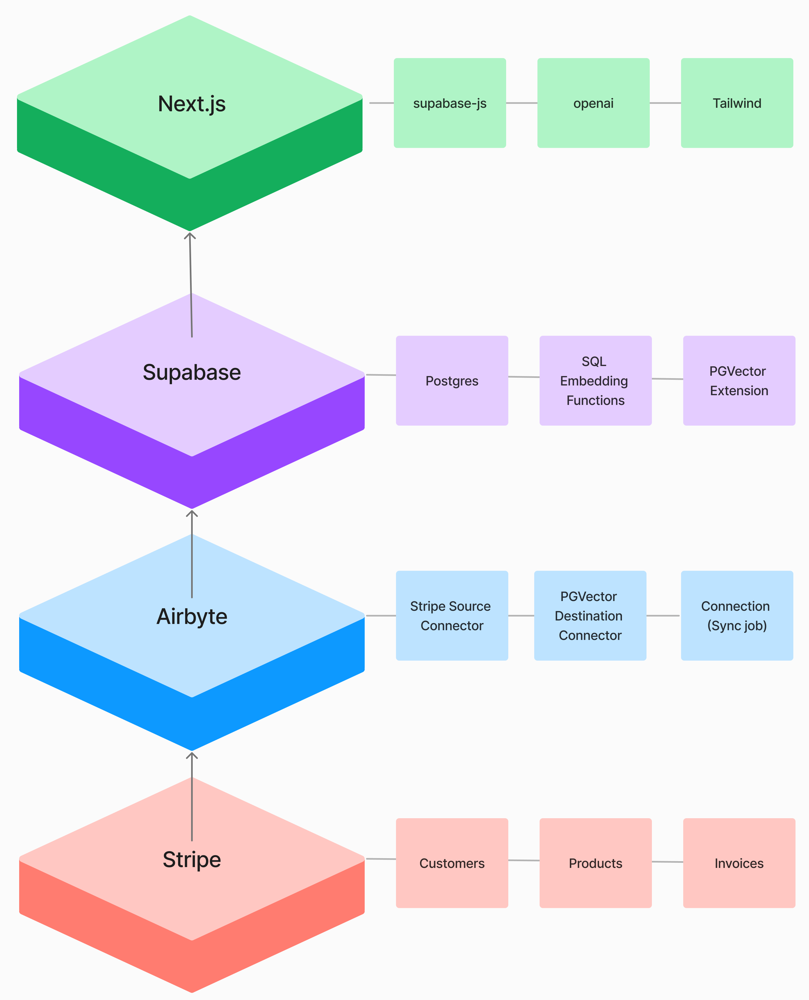
You will get hands on with:
- Airbyte Cloud to connect to Stripe test data
- Use the Airbyte Postgres Destination connector to send Stripe data to Postgres, deployed on Supabase
- Configure Supabase to use PGVector to support embeddings
- Create a data pipeline in Airbyte to handle sync tasks and send data embeddings for AI use cases
- Create SQL functions to work with openAI question embeddings
- Write python-based chatbot uses OpenAI APIs to interact with your data and embeddings.
- (bonus) Create a full-stack web application with a frontend in Next.js, to host your chatbot
Whilst a basic understanding of coding in Next.js, Python, and SQL is helpful, if you are not comfortable with coding in these languages, don't worry! All of the code will be provided for you throughout.
To get started, you will need to set up the following accounts. Lucky for you - you can complete this entire course using free or trial versions. You will not require a credit card or paid account.
- Stripe: Stripe is a very popular platform for processing online payments, with great developer APIs. You will need to Sign up for Stripe account. This will allow you to access test Stripe data for users, products, invoices, and purchases. You do not need to add any payments information. You can skip this during the setup.
- Airbyte Cloud: Airbyte will be used as the data movement platform connecting Stripe with a modern database like Postgres to enable RAG applications. You will use a 14-day trial of Airbyte Cloud. You can sign up here. If you already have an Airbyte Cloud account, please feel free to use this.
- Supabase: Supabase is a cloud-based backend-as-a service. At it's core, it is a managed PostgresSQL database. We will use this database, with the PGVector extension to build a RAG application. [Sign up here] (https://supabase.com/dashboard/sign-in) and create an empty project, giving it whatever name you like.
- OpenAI: OpenAI, the makers of chatGPT provide an API platform for developers to build solutions with natural language processing and similarity search. Sign up for a free account. You will use this for your chatbot to perform searches on your data.
- Google Account: You will create the chatbot code in Python using a Google Collab notebook. In order to do so, you will need a free gmail account. If you prefer to code locally, in your favorite IDE instead of a collab notebook, please do so, just keep in mind, this tutorial will not cover local Python environment configuration.
Once you have created all of your accounts. Let's continue.
There are a lot of new terms when working with AI. They can be overwhelming, but they don't have to be. Here is a quick primer on the most important things you need to understand. Throughout this tutorial, you will apply many of these techniques in your app.
- RAG (Retrieval-Augmented Generation) is an AI architecture which can produce accurate and relevant outputs. In this tutorial, RAG will be used to allow the end user to ask questions such as "what are the most popular products sold?". RAG relies on three key technologies: the retrieval system (for this example, embeddings), model (for this example, openAI's LLM), and vector embeddings (for this example, via PGVector)
- LLM: An LLM (Large Language Model) is a type of artificial intelligence model designed to understand and generate human-like text. It is trained on massive datasets of text from diverse sources and uses advanced machine learning techniques to process and generate language. In this tutorial, we will use OpenAI's LLM.
- Embeddings: Embeddings are a type of representation that transforms data (such as text, images, or other inputs) into dense, low-dimensional vectors of numbers. This makes it easier to perform searches against the data, as it is comparing numbers.
- Similarity search: Similarity search is a technique used to find data items that are most similar to a given query item. It is widely applied in tasks where the goal is to retrieve or rank items based on their similarity in content, context, or structure. It is performed against embeddings.
- Hallucinations: A hallucination refers to a scenario where a generative model, such as a large language model (LLM) that looks correct but factually incorrect, logically flawed, or completely fabricated. The best way to avoid hallucinations is to provide LLMs with domain-specific data. In this case, the data we will provide the LLM will come from Stripe.
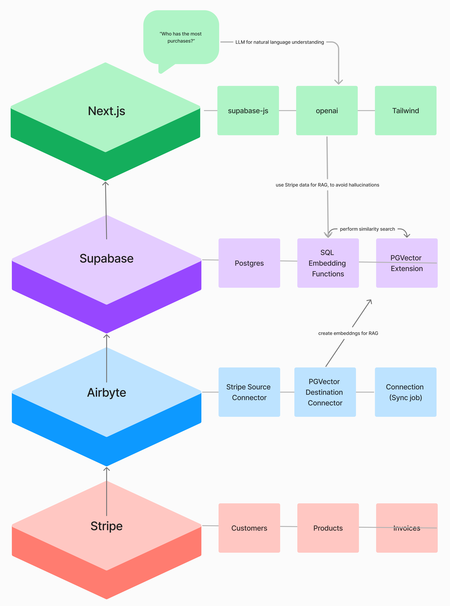
With a primer on key terminology out of the way, it is time to start building your app.
Log into the Stripe account that you create earlier. make sure that you see the orange Test mode banner at the top. This means you are working with test data and no payment processing will occur. If you do not see this, please click the test mode toggle on the upper right.
Once you have your Stripe environment in Test mode, tap Developers in the lower left, then select API keys. Copy the Secret key. You will need this in the next step. 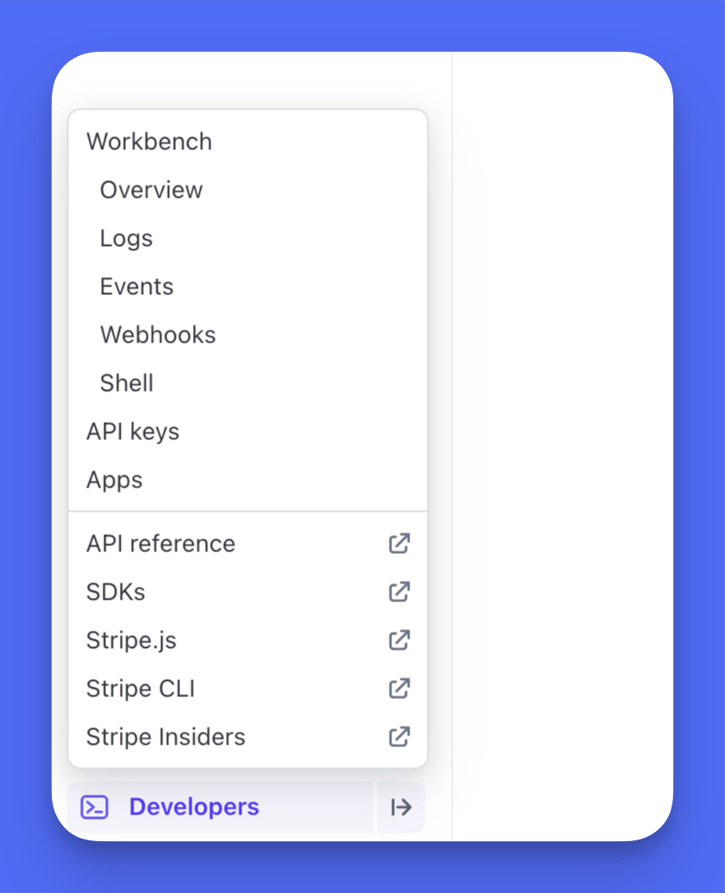
Load Test Data
A chatbot is pretty boring without data. We will be retrieving data from Stripe for products, customers, and purchases. To save some time, we have created a python script to load test data. From within, the Colab notebook. You will see 3 steps in the collab notebook:
- Add a secret key (tap on the key icon on the left) STRIPE_TEST_KEY and use the value from the previous section.
- install the stripe library
- run the script to create and insert test data. 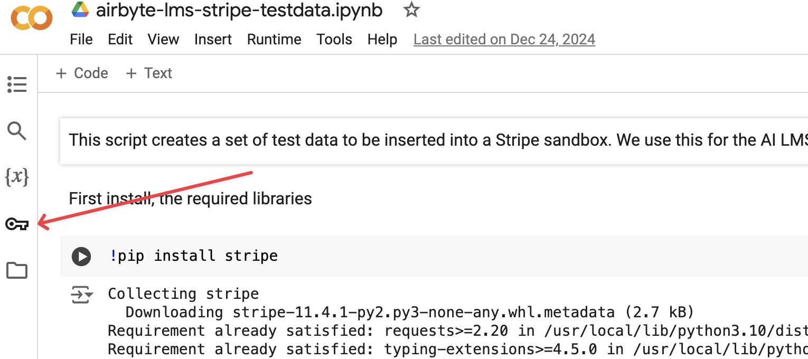
When you run the script, watch for the debug output. Ensure that you see a line which says Sample data creation complete.
We are going to use Supabase as the backend and database portion of the chatbot. You should have already completed the pre-requisites and have a Supabase account. If not, please create one now.
Once logged in, if you haven't created a Project already, tap New Project and select the Organization which you created previously. Name the project, "AirbyteAIBot" and Tap "Create new project".
:::info If you can not name your project upon initial set up, you can always do it later. Don't worry, the name is not important for any of the code we will write. :::
Once your project is created, there are a few important things to note, especially when creating Destination connectors from Airbyte, in particular, Project URL and API Key. You will need these shortly. You can always access these keys, via Settings > API (under Configuration) if you need them.
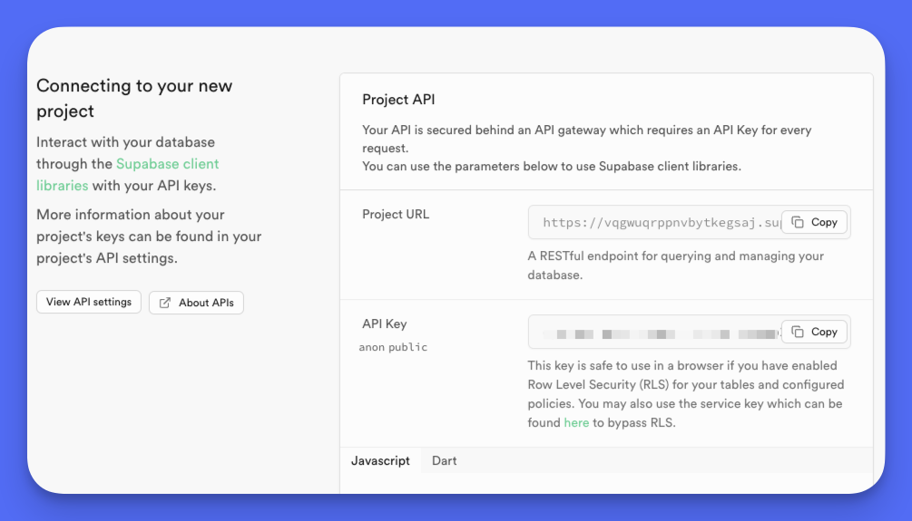
Supabase automatically creates a database on your behalf. Tapping on the database icon on the left navigation, and ensuring you have the public schema selected, Supabase currently shows no tables have been created yet. Don't worry, these will be automatically created by Airbyte when you sync data for the first time. 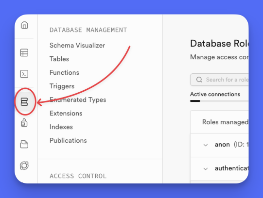
Enable PGVector Extension
One thing you do need to do is enable PGVector. PGVector is an extension to Postgres to allow it to create and store embeddings. Tap Extensions in the database submenu, and type "PGVector" into the search box, then enable the extension via the toggle.
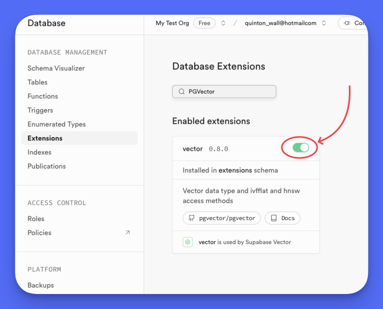
At this point, we have know the source of the data (stripe) and where we want to move the data, or destination (postgres on supabase). It is time to move the data. For this, we will use the Airbyte Cloud platform. To get started, you will need access to your Airbyte credentials, and we will establish our connection first.
Within Airbyte, tap Builder in the left menu, then New custom Connection.
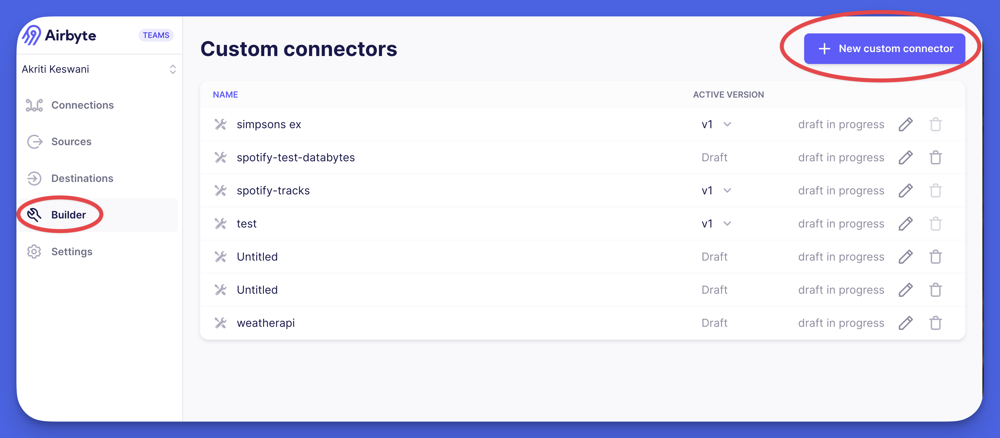
You will be presented with options to create your connector. Select Start from Scratch.
We're starting from scratch to have complete control over our API configuration and to precisely define what Stripe data we want to include in our AI pipeline.
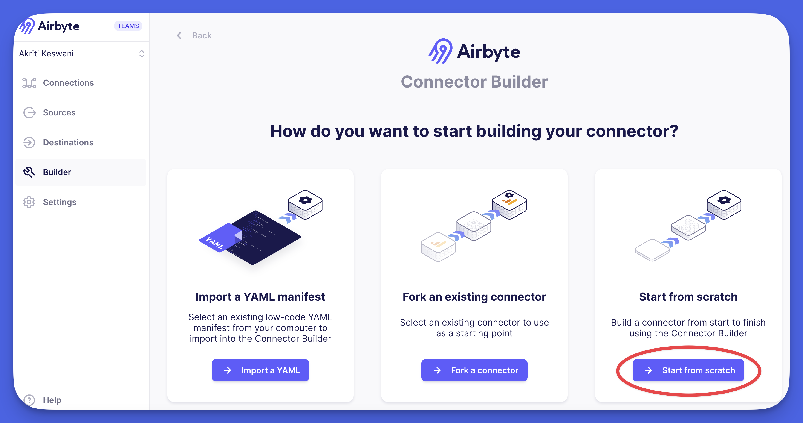
:::info Airbyte offers a pre-built Stripe connector. We could have used this in the tutorial, but wanted to get you hands-on with the connector builder, and it allows us more control over specific fields that we want to sync. :::
We'll use manual connector setup rather than the AI Assistant. This method works best when you need precise control over your API data collection.
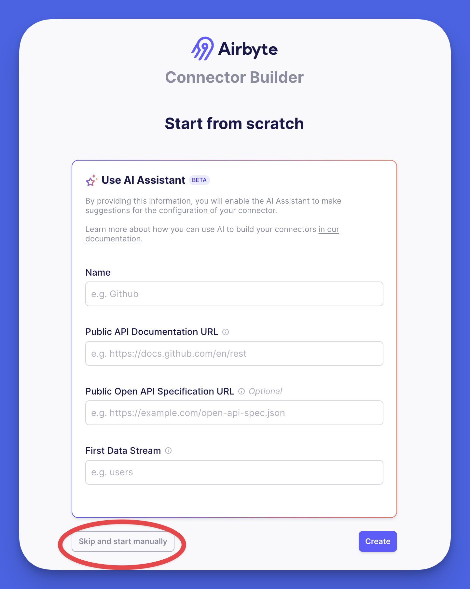
For the base URL, you can use https://api.stripe.com, and Bearer token is used here for Auth: 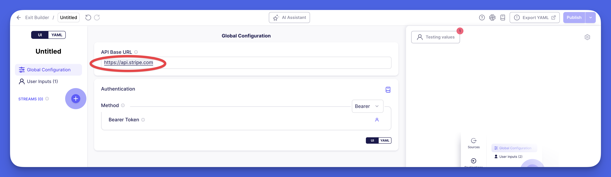
If you click on the "Testing Values" button on the top right, you can see where to put your Stripe API key. Using the secret API key in test mode will probably be the best way to do this.

Now that we have the global configuration setup, let's tackle the actual data streams:
We have four streams in this tutorial that capture the most useful data:
- Customers
- Search Customer
- Invoices
- Products
Customers
To set up the Customer Stream, see the customers endpoint - /v1/customers. This is of course, our URL path! Click the plus button to get started:
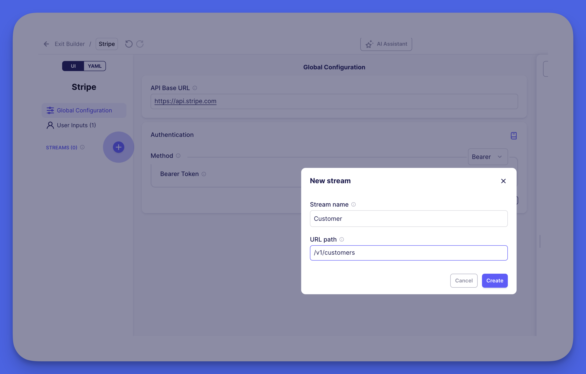
We are sending a GET request and getting JSON as the response. Record selector is selected here which is essential for filtering the records of data.
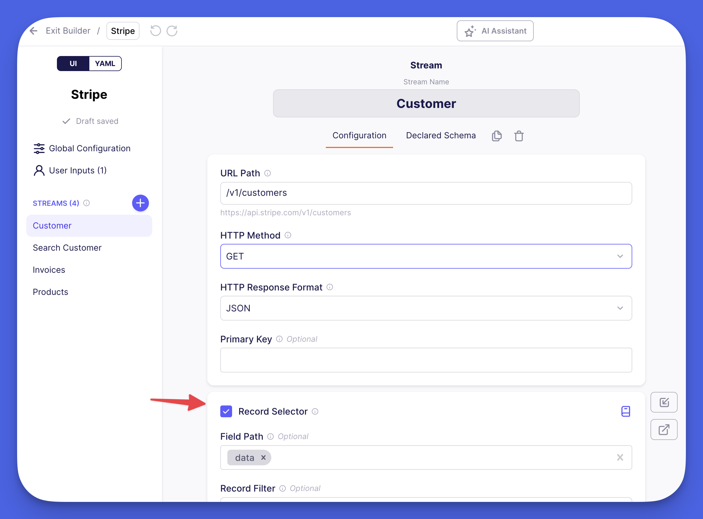
Search Customer
For the search customer stream, you can use - /v1/customers/search as the endpoint. On the right, you can see the response if you filter query by specific email.
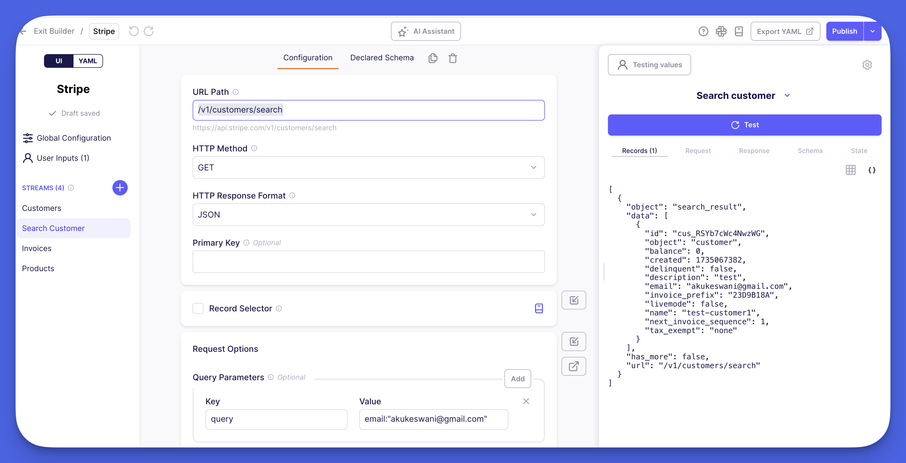
Invoices
Use /v1/invoices for the endpoint.
Products
Use /v1/products for the endpoint.
Note that invoices and products are set up the same way, but you can choose to add whatever field path is best and pagination if needed.
After building the streams, we can publish the custom connector. Now we just need to build the final connection! Click "Publish" on the top right corner.
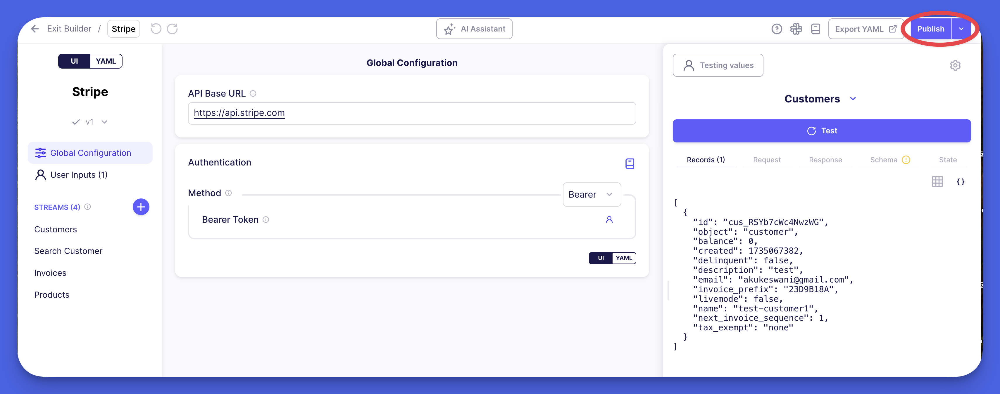
To build out the full connection, we set up PGVector as our destination. This allows for vector similarity search, which will be powerful as shown later.
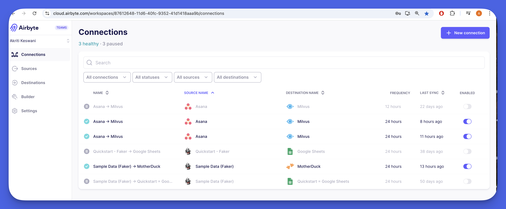
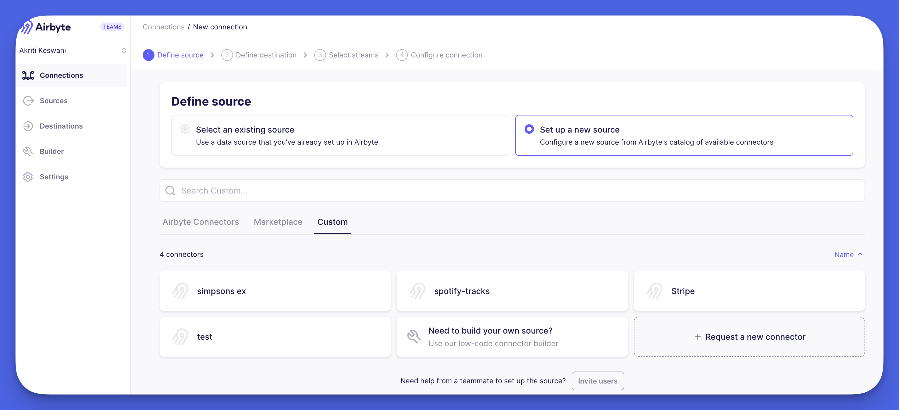
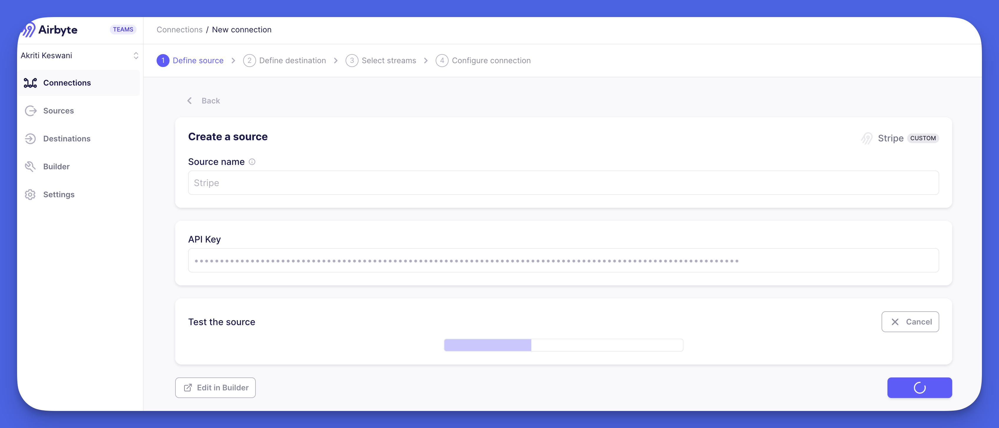
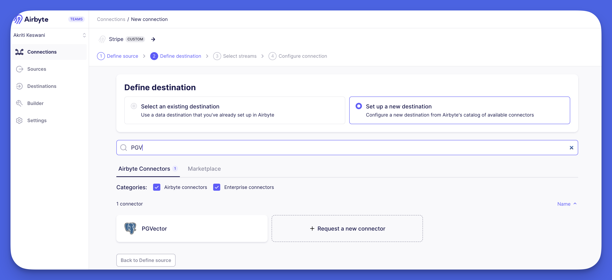
- choose stream
- set up sync options. Overwrite, full sync etc.\
- set embeddings.
- indexing
- run sync and show timeline and logs
- log into superbase and look at customers, invoices, products. Notice the embeddings.
Congratulations! You've achieved a lot in a short amount of time. You've created a fully functioning data movement pipeline. You've taken data from source such as Stripe and moved it into an AI capable data storage product like Postgres and PGVector. By using Airbyte Cloud, you can quickly schedule when to move data, handle incremental changes in that data, and easily add new data sources ensuring that any AI app you build atop this data pipeline has the most up-to-date and relevant information. Remember, at the heart of AI is access to the right data.
todo: create version of the arch diagram that has a prominant data pipeline
Next, you will create the database functions as the sort of interface for your AI chatbot
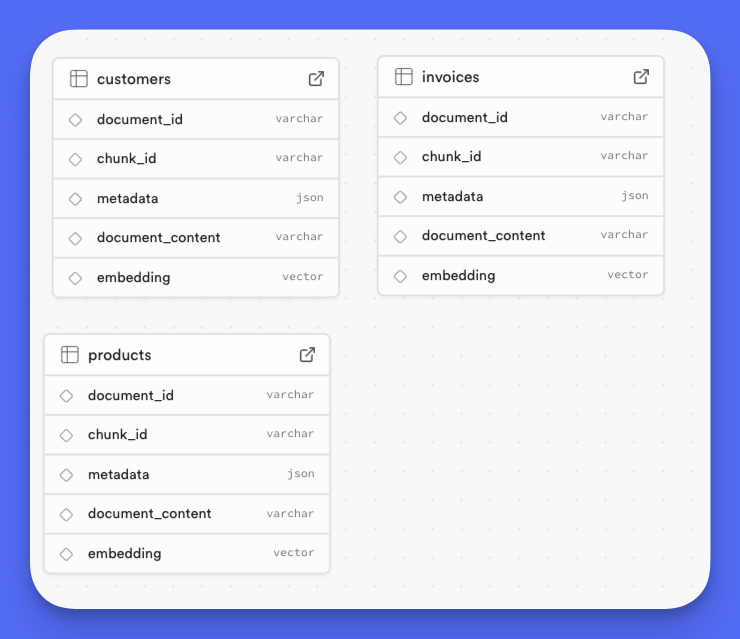
Before we do however, we need to create a few helper functions. These functions, one for each table, will pass in a question vector from openAI and compare this to the embedding of each record to find matches. Put simply, openAI takes a natural language question, converts it to a vector or numerical value, then we want to compare this to the numerical value of the embedding. The closer these two numbers are, the more relevant the results are.
Let's go ahead and create each function. From within Supabase, make sure you are in the database section, then tap Functions, Create new function. Repeat this process to create the following three functions. Each function takes a single argument, question_vector, of return type vector.
:::info
For this section, you will have to use PLpgSQL in the function definition, which is essentially just an extension on top of normal SQL. This may cause syntax errors so we reccomend using SQL editor to test in, as your playground!
:::
find_related_customer
SELECT *
FROM customers
ORDER BY embedding <=> question_vector;
find_related_invoices
SELECT *
FROM invoices
ORDER BY embedding <=> question_vector
find_related_products
SELECT *
FROM products
ORDER BY embedding <=> question_vector
That's it. Make sure all of your work is saved, and your Airbyte Sync is complete and populated data. Now it's time to create the chatbot.
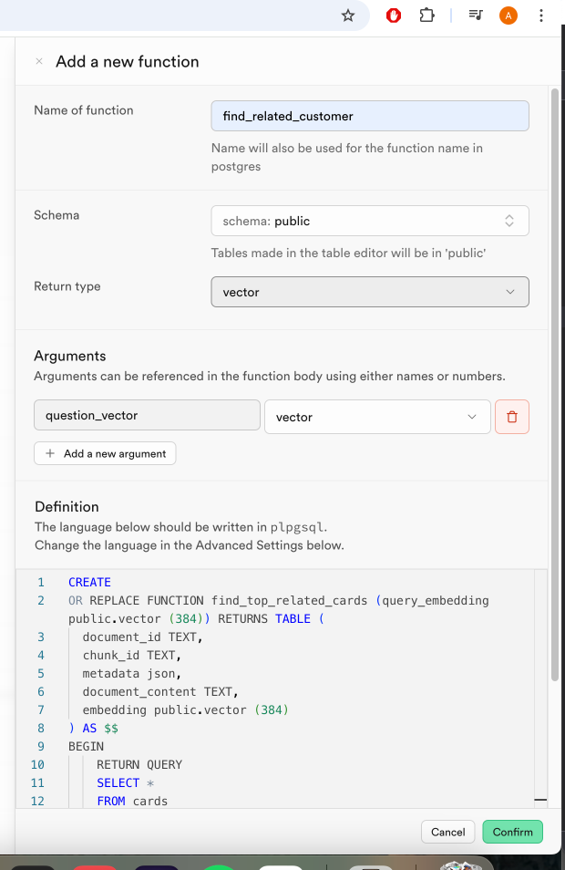
You will create the AI chatbot in Python. To make things simple, we will use a Google Collab notebook. You can think of this as an online IDE. Go ahead and navigate to Google Collab and create a new notebook called airbyteai. If you would prefer to follow along, here is a completed notebook for you.
:::info At the end of each step, don't forget to tap the Run button beside the code to have Collab execute it for you. :::
Add Required Libraries
Install the required libraries.
pip install supabase; openai
Then, import everything into your project space.
:::info You may notice that we didn't import os. This is automatically available in the collab notebook. :::
import os
from supabase import create_client, Client
import openai
Configure Supabase Client
We need to configure the supabase client using the URL and Client key that we previously used in the Airbyte Destination Configuration. To keep things secure, we want to use secrets. If you are not using a Collab notebook, I encourage you to use their environment variables or a .env file to avoid hardcoding sensitive information in your app.
Within Collab, tap the key icon on the left, and add two secrets. Both of these may be obtained within Supabase via Settings > Configuration > API python.
- SUPABASE_URL
- SUPABASE_KEY
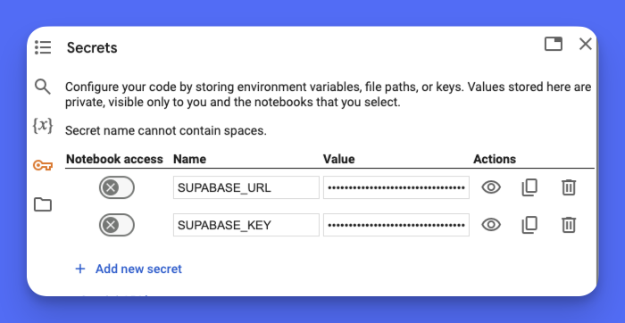
Now, configure your client
from google.colab import userdata
url = userdata.get('SUPABASE_URL')
key = userdata.get('SUPABASE_KEY')
supabase: Client = create_client(url, key)
::: info When you tap run, if this is your first time accessing the keys, you will be prompted to grant access to the secrets. This is ok. Accept and continue. :::
Configure OpenAI
Just like we did with Supabase, we need to add the OpenAI API key. G, OPENAI_API_KEY, add it to your code. To obtain an OpenAI API key, log into your OpenAI account, tap the cog icon in the upper right, then API Keys from the left hand menu, and finally tap Create New Secret Key.
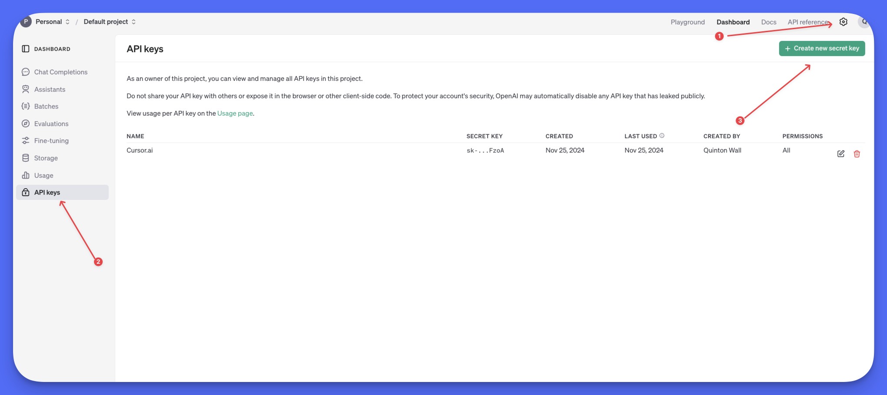
Copy the key and create another secret in your Collab notebook. Then, we can reference it in our code.
openaikey = userdata.get('OPENAI_API_KEY')
Create Embeddings
Next, we need to write a helper function to take the input question from the user and get openAI to convert it into an embedding. We are going to use the text-embedding-3-small model. You can experiment with others, but this works great for our requirement.
# Function to get embedding vector for a question using OpenAI
def get_question_embedding(question):
response = openai.embeddings.create(input=question, model="text-embedding-3-small")
return response.data[0].embedding
Pass the Question to the right context (table)
Now that we have a question, we need to ask the question against the correct dataset. This way, we can compare the embedding of the question against the embeddings of each row. To do this, let's create a simple if, else statement looking for context in the question. Specifically, we will look for a keyword that matches one of the tables that are part of the Airbyte sync job: customer, product, or invoice.
You will see that our calls to Supabase are using the functions we created earlier, and take the question_vector as the input parameter.
def get_context(question) -> str:
# Get embedding for the question
question_embedding = get_question_embedding(question)
results = []
# Determine which table to query based on keywords in the question
if "customer" in question.lower():
query = supabase.rpc("find_related_customer", {'question_vector': question_embedding}).execute()
elif "product" in question.lower():
query = supabase.rpc("find_related_products", {'question_vector': question_embedding}).execute()
elif "invoice" in question.lower():
query = supabase.rpc("find_related_invoices", {'question_vector': question_embedding}).execute()
else:
return "No relevant context found for the given question."
# Process query results
for item in query.data:
results.append(item)
return results
Handle Responses
All that is left is to handle the response to a question. Thankfully, openAI does all the heavy lifting for it. We just need to set up the prompt, and tell openAI which model to use and how many tokens to apply against my account.
# Function to get AI response using OpenAI's chat completion
def get_response(question: str):
openai.api_key = openaikey
response = openai.chat.completions.create(
model="gpt-4o-mini",
messages=[
{"role": "system", "content": "You are a helpful assistant that answers questions about the customers, products, and invoices provided to you in the context. Use only the provided context to answer questions. If the information isn't in the context, say so."},
{"role": "user", "content": f"Question: {question}\n\nContext:\n{get_context(question)}"}
],
max_tokens=150,
temperature=0.7
)
return response.choices[0].message.content.strip()
Test it
All that is left to do is write a quick test, run it and see our hard work pay off!
TODO: CONFIRM YOU CAN DO THIS ON A FREE PLAN. SHOULD AS LONG AS YOU HAVE TRIAL CREDITS
TODO: make more test. things like:
- what is the most common product sold?
- when someone buys more than one product, what is the most common second product sold?
- who made the cheapest purchase? How much did they pay, and what did they buy?
- what is the most common purchase that women make?
# Example usage
question = "Is there a customer named Justin? If so, show me his information"
answer = get_response(question)
print("Answer:", answer)
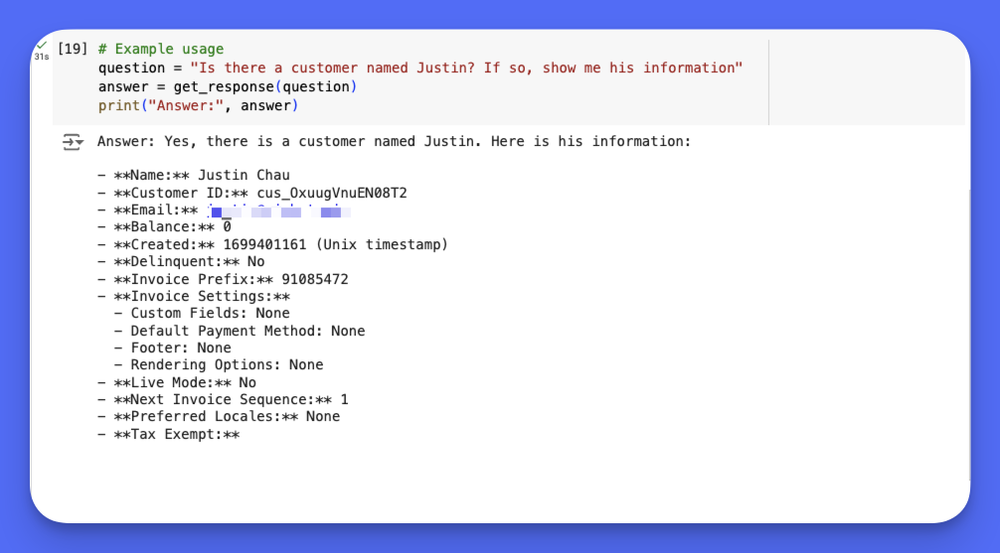
Congratulations! You have successfully built your AI chatbot powered by Airbyte.
Now that we have our chatbot working in Python, let's create a web interface using Next.js. This will give users an intuitive way to interact with our AI-powered data analysis.
The app when finished, should look something like this!
Follow along with the GitHub repo for reference! If you want a better idea of where to place files generally, see the directory structure below
ecommerce-chatbot/
├── src/
│ ├── app/
│ │ ├── api/
│ │ │ └── chat/
│ │ │ └── route.ts # API endpoint for chat
│ │ ├── globals.css
│ │ ├── layout.tsx
│ │ └── page.tsx # Main chat interface
│ ├── components/
│ │ └── ui/
│ │ ├── ChatInput.tsx # Input component
│ │ ├── ChatMessage.tsx # Message display component
│ │ └── theme-provider.tsx # Theme configuration
│ ├── lib/
│ │ ├── openai.ts # OpenAI client setup
│ │ └── supabase.ts # Supabase client setup
│ └── types/
│ └── chat.ts # TypeScript interfaces
├── public/
│ └── favicon.ico
├── .env.local # Environment variables
├── .gitignore
├── eslint.config.mjs # ESLint configuration
├── next.config.ts # Next.js configuration
├── next-env.d.ts # Next.js TypeScript declarations
├── package.json
├── package-lock.json
├── postcss.config.mjs # PostCSS configuration
└── tsconfig.json # TypeScript configuration
Step 1: Setup Next.js Project
npx create-next-app@latest ecommerce-chatbot --typescript --tailwind --eslint
cd ecommerece-chatbot
Install Dependencies
npm install @supabase/supabase-js openai
Environment Variables
Create .env.local in the root directory.
NEXT_PUBLIC_SUPABASE_URL=your_supabase_url
NEXT_PUBLIC_SUPABASE_ANON_KEY=your_supabase_anon_key
OPENAI_API_KEY=your_openai_key
Step 2: Create API Route
(/api/chat/route.ts)
This is the most critical part of the app, where the user's query is:
- Categorized using GPT.
- Processed to find relevant data using Supabase vector search.
- Answered intelligently by GPT based on retrieved data. = Navigate to
app/api/chat/and create a file named route.ts.
This is where you set up connections to Supabase and OpenAI.
import { NextResponse } from 'next/server';
import OpenAI from 'openai';
import { createClient } from '@supabase/supabase-js';
// Initialize Supabase client
const supabase = createClient(
process.env.NEXT_PUBLIC_SUPABASE_URL!,
process.env.NEXT_PUBLIC_SUPABASE_ANON_KEY!
);
// Initialize OpenAI client
const openai = new OpenAI({
apiKey: process.env.OPENAI_API_KEY!,
});
This generates the embedding for the user query.
// Generate embedding for the user's query
async function getQueryEmbedding(message: string) {
const response = await openai.embeddings.create({
model: 'text-embedding-ada-002',
input: message,
});
return response.data[0].embedding;
}
Now, we use GPT to determine whether the query is related to customers, products, or invoices.
// Categorize the user's query
async function categorizeQuery(message: string) {
const response = await openai.chat.completions.create({
model: 'gpt-4',
messages: [
{
role: 'system',
content: `You are an e-commerce assistant. Categorize the query into one of these categories:
- CUSTOMER: For accounts, profiles, personal details, users
- PRODUCT: For items, inventory, specifications, pricing
- ORDER: For payments, invoices, orders, shipping
Respond with just the category name.`,
},
{ role: 'user', content: message },
],
temperature: 0.3,
max_tokens: 10,
});
return response.choices[0].message.content?.trim().toUpperCase();
}
Now, we map the category to the right Supabase function:
// Match query category to Supabase function
function getSupabaseFunction(category: string) {
const functionMap = {
CUSTOMER: 'find_related_customer',
PRODUCT: 'find_related_products',
ORDER: 'find_related_invoices',
};
return functionMap[category];
}
The function from Supabase is called and retrives the relevant data.
// Query Supabase for related data
async function querySupabase(functionName: string, queryEmbedding: number[]) {
const { data, error } = await supabase.rpc(functionName, {
question_vector: queryEmbedding,
});
if (error) throw new Error(`Supabase error: ${error.message}`);
return data;
}
GPT generates a final response.
// Generate a meaningful response using GPT
async function generateGPTResponse(message: string, context: string) {
const response = await openai.chat.completions.create({
model: 'gpt-4',
messages: [
{
role: 'system',
content: 'You are an intelligent assistant. Use the provided context to answer the query clearly and concisely.',
},
{
role: 'user',
content: `Question: ${message}\n\nContext:\n${context}`,
},
],
temperature: 0.3,
max_tokens: 300,
});
return response.choices[0].message.content;
}
Lastly, we can consolidate all of this into a POST function that is the final request:
export async function POST(request: Request) {
try {
const { message } = await request.json();
console.log('Incoming message:', message);
// Step 1: Get embedding for the query
const queryEmbedding = await getQueryEmbedding(message);
// Step 2: Categorize the query
const category = await categorizeQuery(message);
console.log('Detected category:', category);
if (!['CUSTOMER', 'PRODUCT', 'ORDER'].includes(category)) {
return NextResponse.json({
content: 'Please ask about customers, products, or orders.',
});
}
// Step 3: Match category to Supabase function
const functionName = getSupabaseFunction(category);
console.log('Matched function:', functionName);
// Step 4: Query Supabase
const documents = await querySupabase(functionName, queryEmbedding);
const context = documents?.map((doc: any) => doc.document_content).join('\n') || 'No relevant data found.';
// Step 5: Generate GPT response
const response = await generateGPTResponse(message, context);
return NextResponse.json({ content: response });
} catch (error: any) {
console.error('Error:', error.message);
return NextResponse.json({ error: 'Something went wrong.' }, { status: 500 });
}
}
Step 3: Entry Point for App
Once you complete the route, you will have to add to page.tsx as that is your main entry point:
'use client';
import { useState } from 'react';
import ChatInput from './components/ChatInput';
import ChatMessage from './components/ChatMessage';
interface Message {
role: 'user' | 'assistant';
content: string;
}
export default function Chat() {
const [messages, setMessages] = useState<Message[]>([]);
const [input, setInput] = useState('');
const [isLoading, setIsLoading] = useState(false);
async function handleSubmit(e: React.FormEvent) {
e.preventDefault();
if (!input.trim()) return;
const userMessage = { role: 'user', content: input };
setMessages((prev) => [...prev, userMessage]);
setInput('');
setIsLoading(true);
try {
const response = await fetch('/api/chat', {
method: 'POST',
headers: { 'Content-Type': 'application/json' },
body: JSON.stringify({ message: input }),
});
const data = await response.json();
const assistantMessage = { role: 'assistant', content: data.content };
setMessages((prev) => [...prev, assistantMessage]);
} catch (error) {
setMessages((prev) => [
...prev,
{ role: 'assistant', content: 'Something went wrong. Please try again.' },
]);
} finally {
setIsLoading(false);
}
}
return (
<main className="max-w-3xl mx-auto p-4">
<div className="bg-gray-100 rounded p-4 h-[500px] overflow-y-auto mb-4">
{messages.map((msg, i) => (
<ChatMessage key={i} message={msg} />
))}
</div>
<ChatInput
input={input}
setInput={setInput}
handleSubmit={handleSubmit}
isLoading={isLoading}
/>
</main>
);
}
Step 4: Simple Chat UI
In order to structure how the chatbot itself looks, we would need ChatInput.tsx and ChatMessage.tsx as components that help manage how the input looks to users when they type questions + display user queries in the chat-like format.
components/ui/ChatInput.tsx:
import React from 'react';
interface ChatInputProps {
input: string;
setInput: (input: string) => void;
handleSubmit: (e: React.FormEvent) => Promise<void>;
isLoading: boolean;
}
export default function ChatInput({ input, setInput, handleSubmit, isLoading }: ChatInputProps) {
return (
<form onSubmit={handleSubmit} className="relative flex w-full">
<input
type="text"
value={input}
onChange={(e) => setInput(e.target.value)}
placeholder="Ask me about customers, products, or orders..."
className="w-full px-4 py-3 pr-16 rounded-xl border border-gray-200 focus:border-gray-500 focus:ring-2 focus:ring-gray-100 outline-none transition-all"
disabled={isLoading}
/>
<button
type="submit"
disabled={isLoading}
className="absolute right-3 top-1/2 -translate-y-1/2 p-2 rounded-lg bg-gray-800 hover:bg-gray-900 text-white transition-colors disabled:opacity-50 disabled:cursor-not-allowed"
>
{isLoading ? '...' : 'Send'}
</button>
</form>
);
}
components/ui/ChatMessage.tsx:
import React from 'react';
import { Message } from '@/app/types/chat';
interface ChatMessageProps {
message: Message;
}
export default function ChatMessage({ message }: ChatMessageProps) {
return (
<div
className={`flex ${
message.role === 'user' ? 'justify-end' : 'justify-start'
}`}
>
<div
className={`max-w-[80%] rounded-sm px-4 py-3 font-light ${
message.role === 'user'
? 'bg-black text-white'
: 'bg-gray-50 border border-gray-200'
}`}
>
<pre className="whitespace-pre-wrap font-mono text-sm">
{message.content}
</pre>
</div>
</div>
);
}
Security Note
For production:
- Move OpenAI Calls to API Routes:
- Protect API keys by handling all OpenAI calls server-side in /api/chat.
- Add Authentication:
- Use tools like NextAuth.js to restrict access, ensuring only authorized users can query the app.
- Set Up CORS: Allow requests only from trusted domains to secure your backend.
- Secure environment vairables.
Recap & Overview
As you can see below, our app flow is as follows:
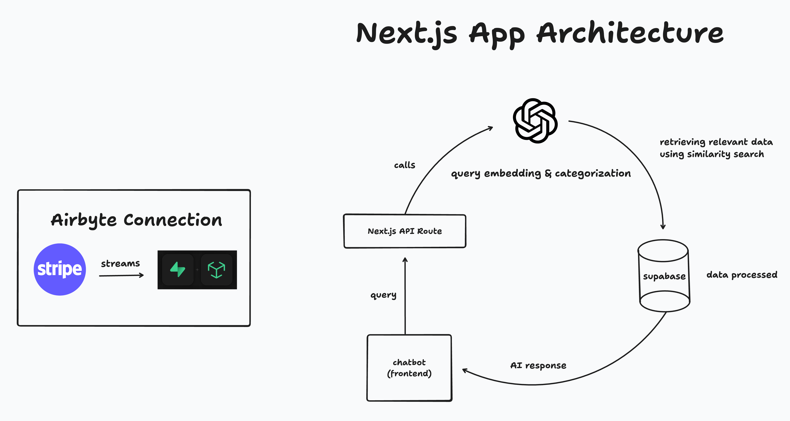
Data Pipeline:
- Stripe API provides structured data (customers, products, invoices).
- Airbyte syncs this data into Supabase with PGVector enabled, allowing semantic search.
Query Flow:
- User questions are sent from the frontend to a backend API.
- OpenAI converts the query into embeddings, and GPT categorizes it (e.g., customer, product, or order).
- Supabase retrieves relevant data using vector similarity, which GPT transforms into a meaningful response.
Key Features:
- PGVector: Performs vector similarity searches on e-commerce data.
- Supabase SQL Functions: Route queries to the correct tables.
- OpenAI GPT: Enhances the experience with human-like responses.
- Next.js Frontend: Provides a user-friendly, real-time chat interface.